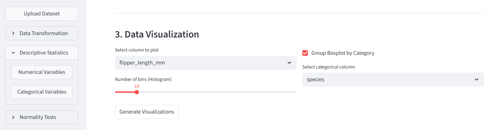
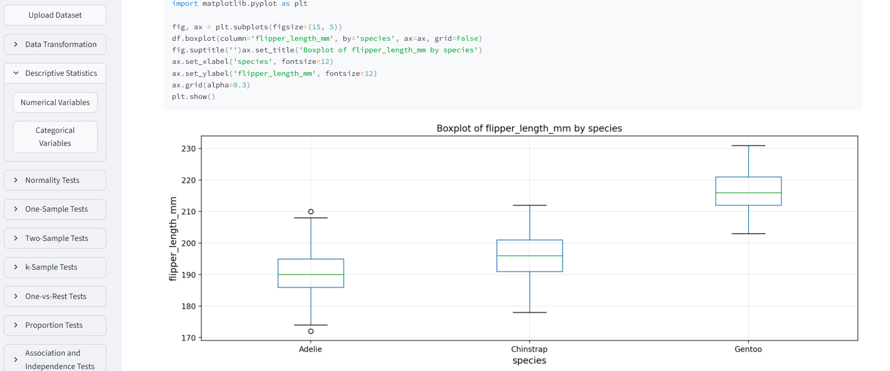
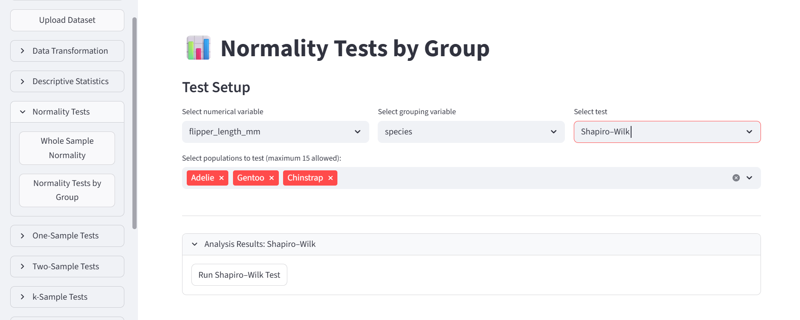
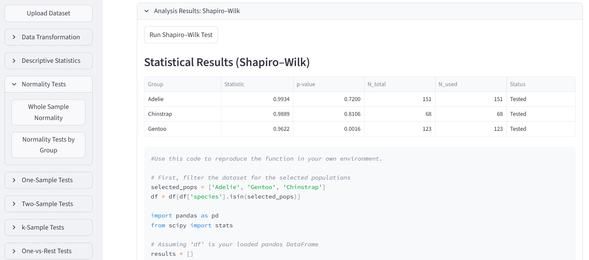
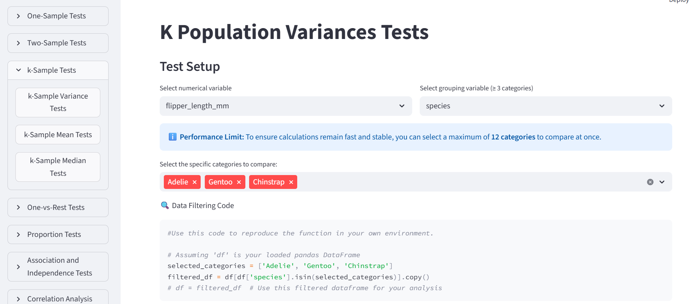
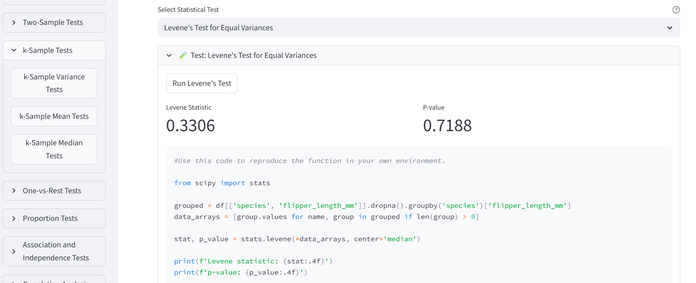
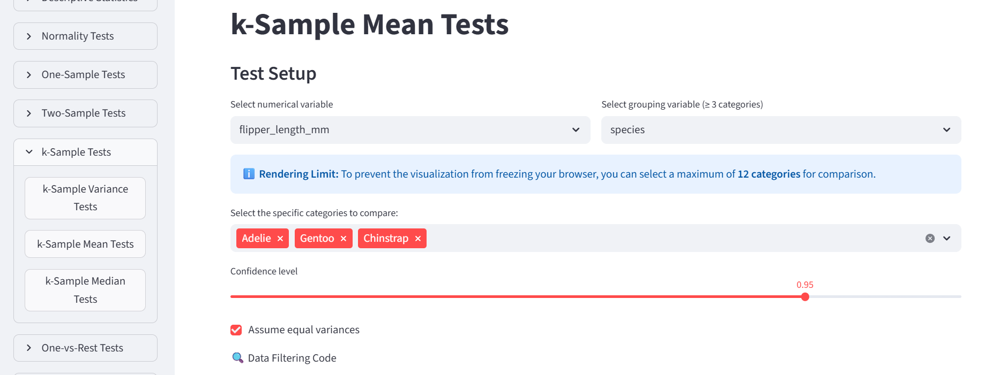
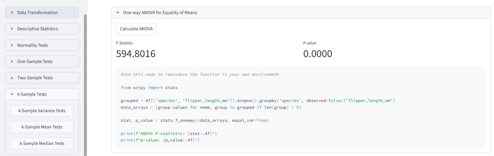
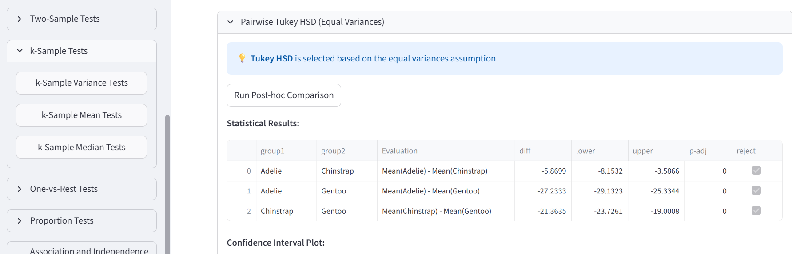
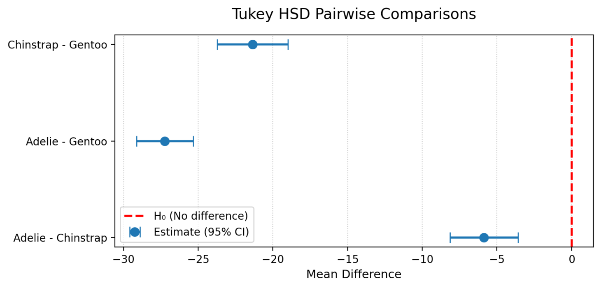

01 · Pingüinos
Análisis paramétrico: comparar medias con ANOVA
Presentación del escenario
¿La longitud media de las aletas es igual en las tres especies de pingüinos? Usaremos ANOVA para comparar sus medias y veremos el código Python que genera el software.
Necesitas la aplicación abierta y el CSV de pingüinos de la carpeta data.
1. Carga de datos
- En Upload Dataset, carga el archivo de pingüinos:
penguins.csv. - Verifica que la vista previa muestre las columnas separadas correctamente.
- En el menú Descriptive Statistics selecciona Numerical Variables y selecciona
flipper_length_mm(longitud de aleta, en milímetros) como variable. - En la parte baja, activa Group Boxplot by Category, elige
speciesy pulsa Generate Visualizations. Esto genera un gráfico de cajas que muestra la distribución de la longitud de aleta por especie.


Gentoo presenta aletas más largas en este gráfico. Queremos saber si hay evidencia suficiente para descartar la hipótesis de igualdad de medias. La herramienta para realizar este análisis es el test de una vía (ANOVA).
El ANOVA clásico se usa con observaciones independientes, distribuciones aproximadamente normales dentro de los grupos y varianzas similares. Fijaremos un nivel de significación de 0,05 y revisaremos normalidad y varianzas antes de comparar medias.
2. Revisar la normalidad por especie
Es importante revisar normalidad y varianzas antes de comparar medias porque sin estas condiciones el ANOVA clásico puede no ser fiable.
Abre Normality Tests → Normality Tests by Group:
- Selecciona
flipper_length_mmcomo variable numérica. - Elige
speciespara agrupar e incluye las tres especies. - Selecciona Shapiro–Wilk y pulsa Run Shapiro-Wilk Test.


La hipótesis nula de esta prueba es que la distribución del grupo es normal. Con \(\mathbf{p < 0,05}\) encontramos evidencia contra la normalidad; con \(\mathbf{p ≥ 0,05}\) no la rechazamos, pero tampoco la demostramos.
En la captura, los valores p son 0,7200 para Adelie, 0,8106 para Chinstrap y 0,0016 para Gentoo. Gentoo requiere atención: revisa su forma, valores extremos y un gráfico Q–Q.
Con observaciones independientes de una misma distribución y varianza finita, el teorema del límite central (TLC) indica que la distribución de la media muestral se aproxima a una normal al aumentar el tamaño de muestra. Los datos individuales no tienen que volverse normales.
Aquí tenemos 151, 68 y 123 casos válidos por especie: todos superan la referencia habitual de 30 por grupo. Esto apoya continuar con una comparación de medias pese al resultado para Gentoo. El 30 es una regla orientativa, no un umbral del teorema; con asimetría marcada o valores extremos pueden hacer falta más observaciones.
La decisión en este ejemplo: continuamos con ANOVA apoyándonos en los tamaños de la muestra por especie.
Mira el código: identifica la selección de grupos y la llamada a shapiro.
3. Comparación de varianzas por especie
- Abre k-Sample Tests → k-Sample Variance Tests.
- Selecciona otra vez
flipper_length_mmcomo variable numérica,speciespara agrupar y elige las tres especies. - Elige Levene’s Test for Equal Variances y ejecuta la prueba.


La hipótesis nula es que las varianzas de los grupos son iguales. En este ejemplo, p = 0,7188: no encontramos evidencia suficiente para rechazarla al nivel 0,05. Eso no demuestra que las varianzas sean idénticas, pero nos permite continuar con el ANOVA.
Mira el código: localiza stats.levene. En la captura se utiliza center='median', una variante menos sensible a desviaciones de normalidad.
4. Comparar las medias
Abre k-Sample Tests → k-Sample Mean Tests y selecciona:
- Variable numérica:
flipper_length_mm. - Agrupación:
species; incluye las tres especies. - Confianza: 0.95 (95% para los intervalos de confianza).
- Assume equal variances: activado para este ejemplo (el test anterior no rechazó la hipótesis de igualdad de varianzas).
Ejecuta el ANOVA. La hipótesis nula es que las tres medias son iguales.


En el ejemplo, \(\mathbf{F \approx 594,80}\) y la pantalla muestra p = 0.0000. Léelo como p < 0,001, no como cero exacto. Hay evidencia suficiente para descatar que las medias de los grupos son iguales, existe por lo menos una media que se diferencia significativamente.
Localiza stats.f_oneway: realiza el ANOVA clásico.
5. Intervalos de confianza y comparaciones por pares
Tukey HSD es la opción para obtener intervalos de confianza cuando se asume igualdad de varianzas. Con una confianza de 0.95, mira los intervalos de las diferencias de medias: si un intervalo no incluye cero, ese par presenta una diferencia significativa.


En la figura ningún intervalo cruza cero. Una diferencia negativa «Adelie − Gentoo» indica una media menor en Adelie.
Para el aprendizaje: Explica la secuencia gráfico de cajas → normalidad → varianzas → ANOVA → Tukey y una limitación del análisis.